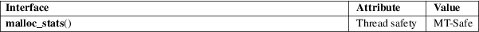

malloc_stats − print memory allocation statistics
Standard C library (libc, −lc)
#include <malloc.h>
void malloc_stats(void);
The malloc_stats() function prints (on standard error) statistics about memory allocated by malloc(3) and related functions. For each arena (allocation area), this function prints the total amount of memory allocated and the total number of bytes consumed by in-use allocations. (These two values correspond to the arena and uordblks fields retrieved by mallinfo(3).) In addition, the function prints the sum of these two statistics for all arenas, and the maximum number of blocks and bytes that were ever simultaneously allocated using mmap(2).
For an explanation of the terms used in this section, see attributes(7).

GNU.
glibc 2.0.
More detailed information about memory allocations in the main arena can be obtained using mallinfo(3).
mmap(2), mallinfo(3), malloc(3), malloc_info(3), mallopt(3)